Pole powierzchni całkowitej ostrosłupa prawidłowego czworokątnego jest równe 20. Pole powierzchni bocznej tego ostrosłupa jest cztery razy większe od pola jego podstawy. Długość krawędzi podstawy tego ostrosłupa jest równa
Podstawą ostrosłupa prawidłowego czworokątnego jest kwadrat o boku długości 4. Ściana boczna tego ostrosłupa jest nachylona do płaszczyzny podstawy pod takim kątem \(\alpha\), że \(\tan\alpha = 3\). Wysokość tego ostrosłupa jest równa
Wysokość graniastosłupa prawidłowego sześciokątnego jest równa 6 (zobacz rysunek). Pole podstawy tego graniastosłupa jest równe \(15\sqrt{3}\).
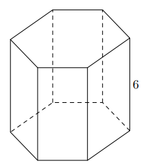Pole jednej ściany bocznej tego graniastosłupa jest równe
Kąt nachylenia najdłuższej przekątnej graniastosłupa prawidłowego sześciokątnego do płaszczyzny podstawy jest zaznaczony na rysunku
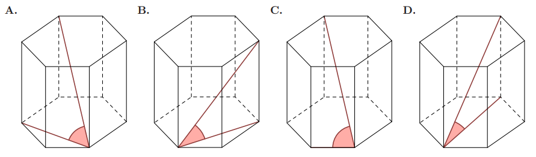Każda krawędź graniastosłupa prawidłowego sześciokątnego ma długość równą 6. Pole powierzchni całkowitej tego graniastosłupa jest równe
Dany jest ostrosłup, którego podstawą jest kwadrat o boku 6. Jedna z krawędzi bocznych tego ostrosłupa ma długość 12 i jest prostopadła do płaszczyzny podstawy. Tangens kąta nachylenia najdłuższej krawędzi bocznej tego ostrosłupa do płaszczyzny podstawy jest równy
Dany jest graniastosłup prawidłowy sześciokątny ABCDEF A'B'C'D'E'F', w którym krawędź podstawy ma długość 5. Przekątna AD' tego graniastosłupa jest nachylona do płaszczyzny podstawy pod kątem 45° (zobacz rysunek).
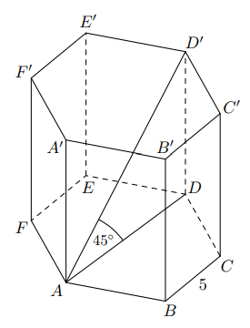
Pole ściany bocznej tego graniastosłupa jest równe
Dany jest graniastosłup prawidłowy czworokątny, w którym krawędź podstawy ma długość 15. Przekątna graniastosłupa jest nachylona do płaszczyzny podstawy pod kątem \(\alpha\) takim, że \(\cos\alpha = \dfrac{\sqrt2}{3}\). Długość przekątnej tego graniastosłupa jest równa
Powierzchnię boczną graniastosłupa prawidłowego czworokątnego rozcięto wzdłuż krawędzi bocznej graniastosłupa i rozłożono na płaszczyźnie. Otrzymano prostokąt ABCD, w którym bok BC odpowiada krawędzi rozcięcia (wysokości graniastosłupa). Przekątna AC tego prostokąta ma długość 16 i tworzy z bokiem BC kąt o mierze 30° (zobacz rysunek).
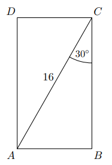
Długość krawędzi podstawy tego graniastosłupa jest równa
Dany jest ostrosłup prawidłowy trójkątny ABCS o podstawie ABC. Punkty D, E i F są środkami – odpowiednio – krawędzi bocznych AS, BS i CS (zobacz rysunek).
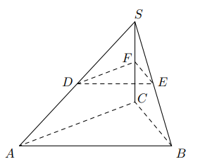
Stosunek objętości ostrosłupa DEF S do objętości ostrosłupa ABCS jest równy
Dany jest graniastosłup prawidłowy trójkątny ABCDEF (zobacz rysunek obok).
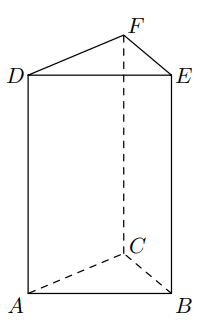Dany jest sześcian ABCDEF GH o krawędzi długości 9. Wierzchołki podstawy ABCD sześcianu połączono odcinkami z punktem W, który jest punktem przecięcia przekątnych podstawy EF GH. Otrzymano w ten sposób ostrosłup prawidłowy czworokątny ABCDW (zobacz rysunek).
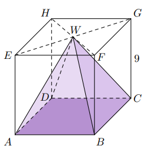
Objętość V ostrosłupa ABCDW jest równa
W graniastosłupie prawidłowym stosunek liczby wszystkich krawędzi do liczby wszystkich ścian jest równy \(7:3\). Podstawą tego graniastosłupa jest
W ostrosłupie prawidłowym trójkątnym wszystkie krawędzie mają długość 8. Pole powierzchni całkowitej tego ostrosłupa jest równe
Dany jest sześcian ABCDEF GH o krawędzi długości a. Punkty E, F, G, B są wierzchołkami ostrosłupa EFGB (zobacz rysunek).
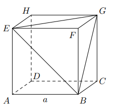
Pole powierzchni całkowitej ostrosłupa EFGB jest równe
Podstawą graniastosłupa prostego jest romb o przekątnych długości 7 cm i 10 cm. Wysokość tego graniastosłupa jest krótsza od dłuższej przekątnej rombu o 2 cm. Wtedy objętość graniastosłupa jest równa
Graniastosłup prawidłowy ma 36 krawędzi. Długość każdej z tych krawędzi jest równa 4. Pole powierzchni bocznej tego graniastosłupa jest równe
Wysokość ściany bocznej ostrosłupa prawidłowego sześciokątnego jest 2 razy dłuższa od krawędzi jego podstawy. Stosunek pola powierzchni bocznej tego ostrosłupa do pola jego podstawy jest równy
Ostrosłupy prawidłowe trójkątne O1 i O2 mają takie same wysokości. Długość krawędzi podstawy ostrosłupa O1 jest trzy razy dłuższa od długości krawędzi podstawy ostrosłupa O2. Stosunek objętości ostrosłupa O1 do objętości ostrosłupa O2 jest równy
Dane są graniastosłup i ostrosłup o takich samych podstawach. Liczba wszystkich wierzchołków tego graniastosłupa jest o 9 większa od liczby wszystkich wierzchołków tego ostrosłupa. Podstawą każdej z tych brył jest
Objętość ostrosłupa prawidłowego czworokątnego, w którym wysokość jest dwa razy dłuższa od krawędzi podstawy, jest równa 144. Długość krawędzi podstawy tego ostrosłupa jest równa
Podstawą graniastosłupa prawidłowego jest kwadrat o boku 2. Przekątna graniastosłupa tworzy z jego podstawą kąt o mierze 60° (zobacz rysunek).
Podstawą ostrosłupa prawidłowego czworokątnego ABCDS jest kwadrat ABCD (zobacz rysunek). Wszystkie ściany boczne tego ostrosłupa są trójkątami równobocznymi. Miara kąta SAC jest równa
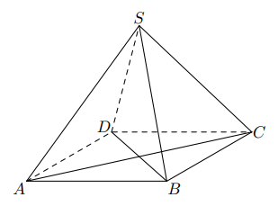Podstawą ostrosłupa jest kwadrat ABCD o boku długości 4. Krawędź boczna DS jest prostopadła do podstawy i ma długość 3 (zobacz rysunek).
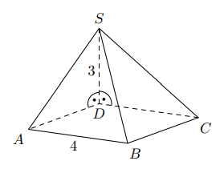Pole ściany BCS tego ostrosłupa jest równeGdy dodamy liczbę wszystkich krawędzi pewnego graniastosłupa do liczby wszystkich jego wierzchołków, to otrzymamy w wyniku 15. Liczba wszystkich krawędzi tego graniastosłupa jest równa
Podstawą ostrosłupa jest kwadrat KLMN o boku długości 4. Wysokością tego ostrosłupa jest krawędź NS, a jej długość też jest równa 4 (zobacz rysunek). 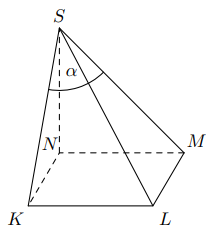 Kąt α, jaki tworzą krawędzie KS i MS, spełnia warunek
Podstawą graniastosłupa prostego jest prostokąt o bokach długości 3 i 4. Kąt α, jaki przekątna tego graniastosłupa tworzy z jego podstawą, jest równy 45° (zobacz rysunek). 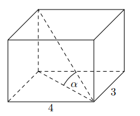 Wysokość graniastosłupa jest równa
Na rysunku przedstawiono ostrosłup prawidłowy czworokątny ABCDS o podstawie ABCD.
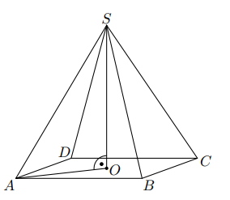Kąt nachylenia krawędzi bocznej SA ostrosłupa do płaszczyzny podstawy ABCD to
Graniastosłup ma 14 wierzchołków. Liczba wszystkich krawędzi tego graniastosłupa jest równa
Podstawą graniastosłupa prawidłowego czworokątnego jest kwadrat o boku długości 2, a przekątna ściany bocznej ma długość 3 (zobacz rysunek). 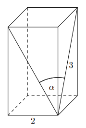 Kąt, jaki tworzą przekątne ścian bocznych tego graniastosłupa wychodzące z jednego wierzchołka, ma miarę \(\alpha\). Wtedy wartość \(\sin^2\alpha\) jest równa
Różnica liczby krawędzi i liczby wierzchołków ostrosłupa jest równa 11. Podstawą tego ostrosłupa jest
Podstawą ostrosłupa prawidłowego czworokątnego ABCDS jest kwadrat ABCD. Wszystkie ściany boczne tego ostrosłupa są trójkątami równobocznymi. Miara kąta ASC jest równa
Przekątna podstawy graniastosłupa prawidłowego czworokątnego jest dwa razy dłuższa od wysokości graniastosłupa. Graniastosłup przecięto płaszczyzną przechodzącą przez przekątną podstawy i jeden wierzchołek drugiej podstawy (patrz rysunek). 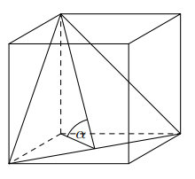 Płaszczyzna przekroju tworzy z podstawą graniastosłupa kąt \(\alpha\) o mierze
Graniastosłup o podstawie ośmiokąta ma dokładnie
W ostrosłupie czworokątnym, w którym wszystkie krawędzie mają tę samą długość, kąt nachylenia krawędzi bocznej do płaszczyzny podstawy ma miarę
W graniastosłupie prawidłowym czworokątnym EFGHIJKL wierzchołki E, G, L połączono odcinkami (tak jak na rysunku). Wskaż kąt między wysokością OL trójkąta EGL i płaszczyzną podstawy tego graniastosłupa.
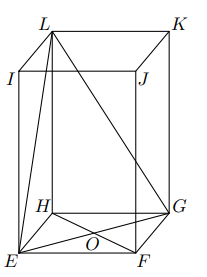Każda krawędź graniastosłupa prawidłowego trójkątnego ma długość równą 8. Pole powierzchni całkowitej tego graniastosłupa jest równe
Na rysunkach poniżej przedstawiono siatki dwóch ostrosłupów.
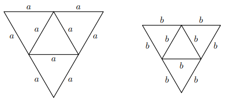
Pole powierzchni całkowitej ostrosłupa o krawędzi a jest dwa razy większe od pola powierzchni całkowitej ostrosłupa o krawędzi b. Ile razy objętość ostrosłupa o krawędzi a jest większa od objętości ostrosłupa o krawędzi b?
Z sześcianu ABCDEF GH o krawędzi długości a odcięto ostrosłup ABDE (zobacz rysunek). Ile razy objętość tego ostrosłupa jest mniejsza od objętości pozostałej części sześcianu?
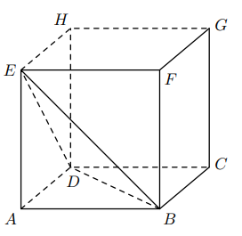Ostrosłup i graniastosłup mają równe pola podstaw i równe wysokości. Objętość ostrosłupa jest równa \(81\sqrt3\). Objętość graniastosłupa jest równa
Objętość ostrosłupa prawidłowego czworokątnego jest równa 432, a krawędź podstawy tego ostrosłupa ma długość 12. Wysokość tego ostrosłupa jest równa
Rysunek przedstawia ostrosłup prawidłowy czworokątny ABCDS. Kątem między krawędzią CS a płaszczyzną podstawy tego ostrosłupa jest kąt
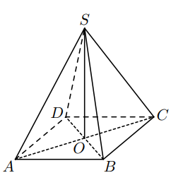Objętość graniastosłupa prawidłowego trójkątnego o wysokości 7 jest równa \(28\sqrt3\). Długość krawędzi podstawy tego graniastosłupa jest równa
W graniastosłupie prawidłowym trójkątnym wszystkie krawędzie są tej samej długości. Suma długości wszystkich krawędzi jest równa 90. Wtedy pole powierzchni całkowitej tego graniastosłupa jest równe
Dany jest ostrosłup prawidłowy czworokątny o krawędzi podstawy 2 i wysokości 8. Wpisano w niego sześcian w taki sposób, że dolna podstawa sześcianu zawiera się w podstawie ostrosłupa, a krawędzie jego górnej podstawy zawierają się w ścianach bocznych ostrosłupa (zobacz rysunek).
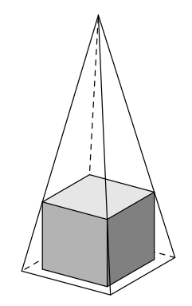Oceń prawdziwość poniższych stwierdzeń. Wybierz P (prawda) lub F (fałsz).
Dany jest graniastosłup prawidłowy czworokątny, o krawędzi podstawy a oraz wysokości h. Wpisano w niego ostrosłup prawidłowy czworokątny w taki sposób, że krawędzie podstawy ostrosłupa i graniastosłupa pokrywają się, zaś górny wierzchołek ostrosłupa jest środkiem podstawy górnej graniastosłupa (zobacz rysunek). Niech F będzie bryłą powstałą po wycięciu ostrosłupa z graniastosłupa. Różnica objętości bryły F i objętości ostrosłupa jest równa
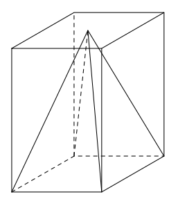W ostrosłupie prawidłowym trójkątnym ABCS zaznaczono środki krawędzi AB, AC i AS odpowiednio punktami D, E, F (zobacz rysunek).
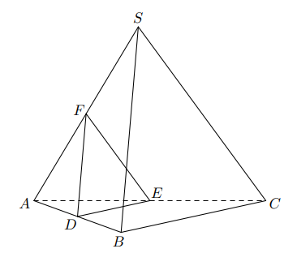Oceń prawdziwość poniższych stwierdzeń. Wybierz P lub F.